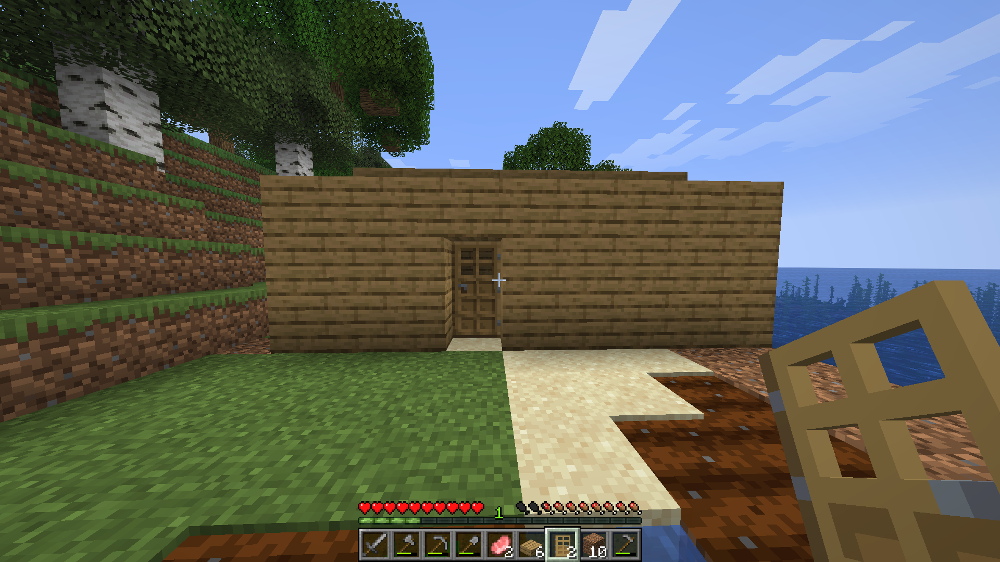

Set Up a Safe Village Trading Route

A nearby village can become a useful stop for supplies and trading. Before making it part of your regular route, make the journey easy to follow and help the villagers stay protected from nighttime threats.
Light the approach
Travel during the day the first time and look for a direct path from your base. Add torches at bends, bridges, and other confusing spots. Clear dangerous drops or mark them clearly, and build a simple bridge where water or a ravine interrupts the route. Avoid removing every natural feature; just make the path clear enough to recognize on the return trip.
Protect the trading area
Light the village's common paths and entrances. Close gaps in walls or fences where villagers might wander into hazards, and avoid leaving doors or gates open behind you if you have enclosed an area. Do not place workstations randomly if you are trying to keep jobs organized; keep each station near the villager you intend to use it with and give the area room to navigate.
Trade with a plan
Bring the items you intend to exchange and enough inventory space for what you receive. Check available offers before collecting a large amount of one material. A small chest near the route's destination can hold spare food and building blocks, but do not store your only copy of valuable gear there until the location is secure. Visit regularly, restock what you used, and improve the path as you learn which parts are difficult to traverse.
- Mark and light the route between home and the village.
- Secure dangerous gaps and keep village paths clear.
- Bring trade supplies and inventory space for the return trip.